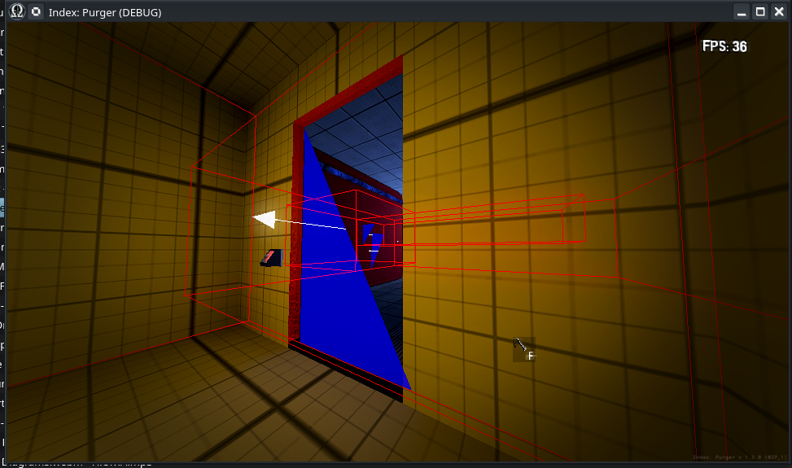

Module: room_debug
Documentation last edited: October 23, 2025 at 14:33 UTC
Description
Угадаешь, что он делает? Название звучит красиво, знаешь ли, "Room Debug". Отладка комнаты. С чего бы ты вдруг стал отлаживать комнату? Не то чтобы я твоя мама, чтобы издеваться над беспорядком, который у тебя может быть или нет. А комнаты в Purger не имеют каких-то особых свойств. Ладно, не буду больше играть с твоим сознанием. На самом деле всё просто -
RoomDebug
должен... отлаживать комнаты... Окей, становится сложнее. В этом замечательном движке есть "Portal-based Occlusion Culling", верно? Он разделяет пространство на "комнаты", которые "видят" друг друга через "порталы". Так вот, эти два ублюдка могут превратить твою жизнь в ад, особенно когда приходится анализировать, почему occlusion culling внезапно сломался в одной из локаций. Это и есть главная причина существования этого класса.

Пример использования
RoomDebug.debug_enable()
RoomDebug.debug_disable()
RoomDebug.debug_toggle()
Это просто прикольный синглтон.
General Information
Root directories list
docs, src
Nodes
Classes
None
Resources
None
Other Scripts
None